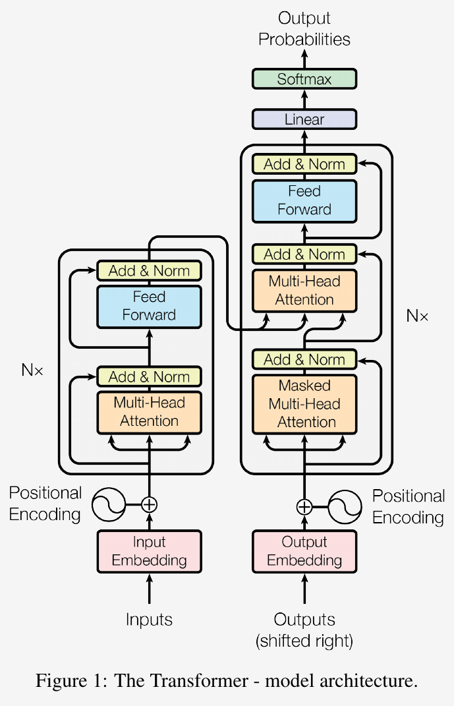
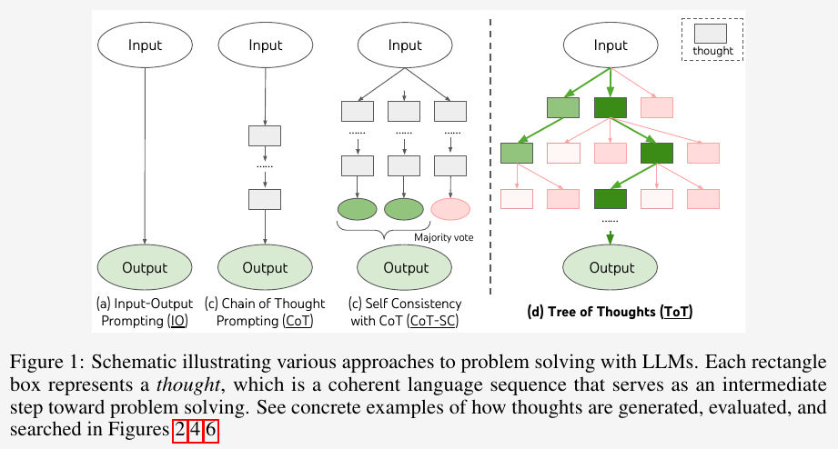
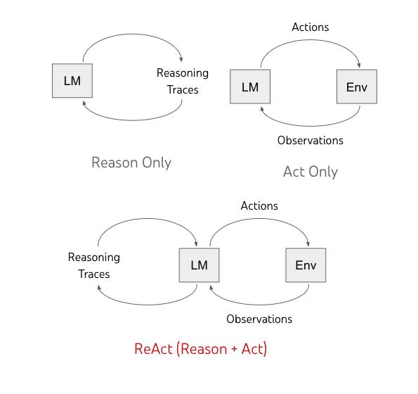
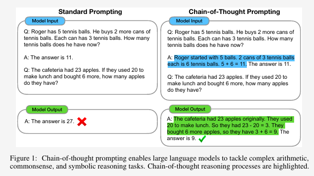
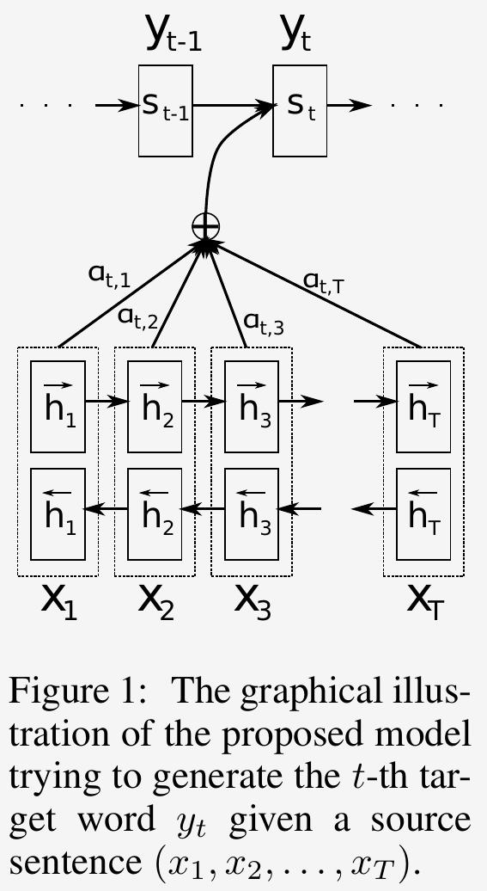
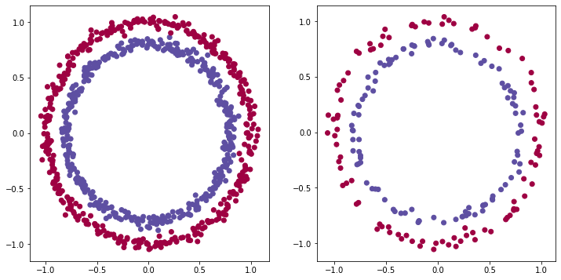
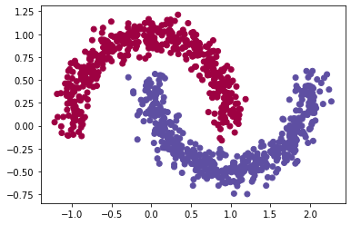
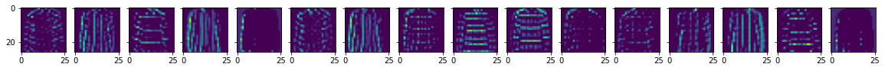
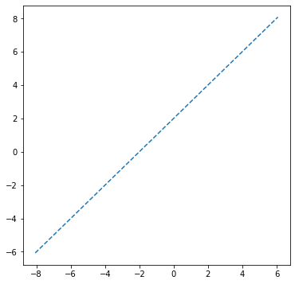

import json import os import sqlite3 import torch from pathlib import Path from mistral_inference.model import Transformer from mistral_inference.generate import generate …
SFTTrain…




PyPDFLoader
pypdf
accelerate
Trainer
load_dataset
openai



import numpy as np import tensorflow as tf import matplotlib.pyplot as plt from sklearn.datasets import make_moons

from tensorflow.keras import (datasets, models, layers) import matplotlib.pyplot as plt
from tensorflow.keras import (datasets, callbacks, models, layers, optimizers, losses)
